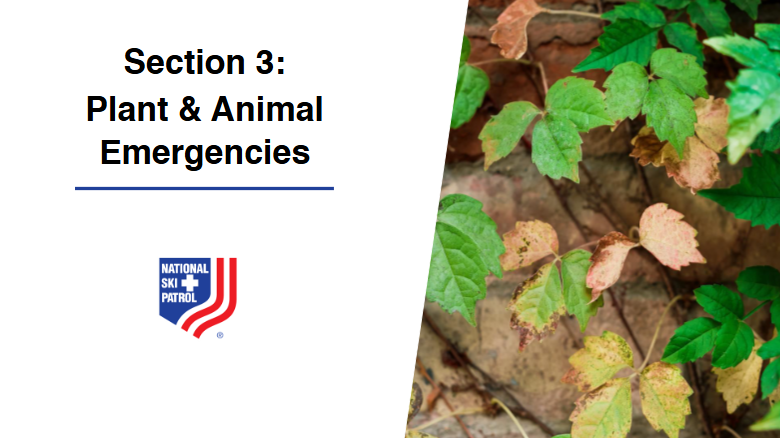
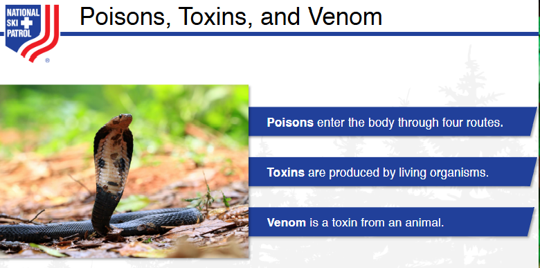

Nsp Oec Training Chapter 27
National Ski Patrol - Outdoor Emergency Care chapter 27

Chapter 27: Plant & Animal Emergencies
- Describe how plants and fungi can be harmful to humans
- Describe how mushrooms can be harmful to humans.
- Describe and demonstrate how to assess a patient who has been injured following an encounter with a toxic plant, an animal, or marine life.
- Describe and demonstrate how to manage an exposure to topical toxins
- Describe and demonstrate how to manage someone who has been bit by a poisonous snake.
- Describe and demonstrate the proper management of wounds caused by animals.
27.1 Describe how plants and fungi can be harmful to humans
Plants can be harmful to humans by producing toxic substances that cause poisoning when ingested, touched, or inhaled, such as in the case of poison ivy or deadly nightshade. Fungi can lead to infections, like athlete's foot and ringworm, or produce mycotoxins (toxic compounds), which can contaminate food and cause serious health issues if ingested. Additionally, certain airborne fungi release spores that can trigger allergies or respiratory problems.
27.2 Describe how mushrooms can be harmful to humans.
Mushrooms can be harmful to humans primarily through toxic poisoning, as some wild mushrooms contain dangerous toxins that can cause symptoms ranging from gastrointestinal distress (nausea, vomiting, diarrhea) to severe organ failure and even death. Consuming certain types, like the Amanita species (e.g., death cap), can lead to liver and kidney damage, often with delayed symptoms that make early diagnosis difficult. Additionally, hallucinogenic mushrooms can cause psychological effects, confusion, and dangerous behavior, while airborne spores from some fungi can trigger allergic reactions or respiratory problems.
27.3 Describe and demonstrate how to assess a patient who has been injured following an encounter with a toxic plant, an animal, or marine life.
Assessing a patient who has been injured after contact with a toxic plant, animal, or marine life involves a systematic approach to determine the severity of the injury and provide appropriate care. Here are the steps to describe and demonstrate the assessment:
1. Scene Safety and Precautions
- Ensure the scene is safe for you and the patient, avoiding further exposure to the toxin (e.g., avoiding the plant or animal).
- Initiate standard precautions such as wearing gloves to prevent accidental contact with any remaining toxins.
2. Initial Assessment (ABCs)
- Airway: Check if the airway is clear. Be vigilant for any signs of swelling or obstruction, especially if there has been contact with a venomous animal or inhalation of toxic plant fumes.
- Breathing: Assess breathing by looking, listening, and feeling. Check for wheezing, shortness of breath, or abnormal sounds, which may indicate an allergic reaction or respiratory distress.
- Circulation: Check for pulse and signs of shock (e.g., pale, clammy skin, rapid heartbeat, low blood pressure). Be alert for symptoms like dizziness or fainting, which may indicate a severe systemic reaction.
3. Focused Physical Examination
- Skin Assessment: Examine the skin for redness, swelling, rashes, blisters, or puncture wounds. Note the location and extent of any reactions, including spreading redness or swelling.
- Bite, Sting, or Contact Marks: Look for specific signs such as bites, stings, punctures, or contact dermatitis. Document the appearance and any oozing, bruising, or signs of infection.
- Pain Assessment: Ask the patient about the level and type of pain they are experiencing (e.g., sharp, burning, throbbing) and if it is spreading or localized.
4. Medical History and Symptoms Inquiry
- Ask About the Exposure: Get details on when, where, and how the exposure occurred. Ask if the patient can identify the plant, animal, or marine life involved.
- Allergies and Past Reactions: Check if the patient has a history of allergies, especially to plants, animals, or stings, and if they have had similar reactions before.
- Onset of Symptoms: Inquire about the timing of symptoms (e.g., immediate or delayed onset), including difficulty breathing, nausea, dizziness, numbness, tingling, or swelling.
5. Monitoring for Signs of Severe Reactions
- Anaphylaxis Symptoms: Be alert for signs of anaphylaxis, such as hives, facial swelling, difficulty breathing, and rapid onset of symptoms. Immediate intervention with epinephrine may be needed if available.
- Systemic Symptoms: Look for signs of systemic involvement, like muscle weakness, abdominal pain, vomiting, confusion, or seizures, which may indicate the spread of toxins throughout the body.
6. Document and Record Findings
- Document All Findings: Record all physical observations, vital signs, and the patient's description of symptoms. Note any visible injuries, the extent of the reaction, and changes in the patient’s condition.
- Take Photos if Possible: If feasible, take photos of the affected area for further medical evaluation, especially if the patient is unsure of the exact source of exposure.
Summary of Steps:
- Scene Safety: Ensure safety and wear gloves to prevent contamination.
- Initial Assessment (ABCs): Check airway, breathing, and circulation, addressing any immediate threats.
- Focused Examination: Inspect the skin, look for bite or contact marks, and assess the area of injury.
- Medical History: Inquire about allergies, past reactions, and specific details about the exposure.
- Monitor for Severe Reactions: Watch for signs of anaphylaxis or systemic symptoms and be prepared to act.
- Document Findings: Record all observations and take photos if possible for further evaluation.
Demonstration Considerations:
When assessing, ensure the patient remains calm and comfortable. Be prepared to provide immediate care, such as removing stingers, rinsing the affected area, or administering an EpiPen if needed, while waiting for emergency medical services to arrive.
27.4 Describe and demonstrate how to manage an exposure to topical toxins
Managing exposure to topical (skin-contact) toxins involves prompt and careful actions to remove the toxin, minimize absorption, and treat any reactions. Here’s how to describe and demonstrate the appropriate care:
1. Ensure Scene Safety and Use Protective Gear
- Scene Safety: Make sure the environment is safe for both you and the patient, and avoid direct contact with the toxin.
- Wear Protective Gear: Use gloves, masks, and eye protection to prevent self-exposure while treating the patient.
2. Remove the Source of the Toxin
- Remove Contaminated Clothing: Carefully take off any clothing that has been in contact with the toxin. Cut clothing away instead of pulling it over the head to avoid spreading the toxin to other areas.
- Gently Brush Off Any Residue: If the toxin is in powder form, gently brush it off the skin with a cloth or gloved hand before rinsing.
3. Flush the Affected Area with Water
- Rinse Thoroughly: Use cool running water to flush the affected skin for 15–20 minutes. Make sure the water flows away from the body to avoid spreading the toxin to other areas.
- Avoid Scrubbing: Do not scrub the skin, as this can increase absorption of the toxin and cause irritation.
- Use Soap if Safe: If the toxin is oil-based (e.g., certain pesticides), you can use a mild soap to help remove it. Ensure you use soap that is not abrasive.
4. Treat Skin Reactions
- For Minor Irritation: If the skin is red or mildly irritated, apply a cool compress to soothe the area and reduce inflammation.
- For Severe Reactions: If there are blisters, burns, or swelling, avoid applying ointments or creams unless directed by a healthcare provider, as this could trap the toxin against the skin.
- Pain Management: Offer over-the-counter pain relievers (e.g., ibuprofen or acetaminophen) if the patient is in discomfort, and they have no contraindications to taking these medications.
5. Monitor for Systemic Symptoms
- Watch for Signs of Systemic Absorption: Be vigilant for symptoms such as nausea, dizziness, weakness, confusion, or difficulty breathing, which may indicate that the toxin has been absorbed into the bloodstream.
- Call for Emergency Medical Help if Necessary: If the patient shows signs of severe systemic reaction or if the toxin is known to be highly dangerous, seek immediate medical assistance.
6. Documentation and Follow-Up Care
- Document the Exposure: Record details about the toxin (if known), the time of exposure, the area of the skin affected, and any symptoms the patient experiences. This information is crucial for further medical treatment.
- Refer for Medical Evaluation: Recommend that the patient visit a healthcare provider for further evaluation, especially if they continue to experience symptoms or if the toxin is particularly hazardous.
Summary of Steps:
- Scene Safety: Ensure safety and wear gloves to prevent self-exposure.
- Remove the Toxin: Take off contaminated clothing and brush off any residue.
- Rinse the Skin: Flush the affected area with water for 15–20 minutes, using soap if needed.
- Treat Skin Reactions: Use cool compresses for mild irritation and monitor for severe reactions.
- Monitor for Systemic Symptoms: Watch for signs of toxin absorption and seek medical help if needed.
- Documentation and Follow-Up: Record all details and refer for further medical evaluation.
Demonstration Considerations:
When demonstrating these steps, emphasize gentleness and care in handling the affected area, avoiding further irritation or spreading of the toxin. Show how to properly rinse the area, ensure that contaminated clothing is removed safely, and stress the importance of continuous observation for any worsening of symptoms.
27.5 Describe and demonstrate how to manage someone who has been bit by a poisonous snake.
Managing a snake bite from a poisonous (venomous) snake requires quick and careful action to reduce the spread of venom, minimize complications, and ensure the safety of the patient. Here’s how to describe and demonstrate the appropriate care:
1. Ensure Scene Safety
- Move to Safety: Ensure the patient and yourself are away from the snake to prevent additional bites. Do not attempt to capture or kill the snake, but try to remember its color and shape for identification if possible.
- Call for Emergency Help: Immediately call emergency medical services (EMS) or ask someone else to do so. Venomous snake bites require urgent medical attention, even if symptoms are not severe at first.
2. Keep the Patient Calm and Still
- Minimize Movement: Encourage the patient to remain calm and still to help slow down the spread of venom. Excessive movement or anxiety can increase heart rate and speed up the circulation of venom.
- Positioning: Have the patient lie down with the affected limb immobilized and positioned at or slightly below heart level. This helps to slow the spread of venom through the body.
3. Remove Tight Clothing and Jewelry
- Remove Items Near the Bite: Carefully remove rings, bracelets, or tight clothing around the bite area. The limb may swell, and removing these items early can prevent complications from restricted circulation.
4. Clean the Wound and Cover It Lightly
- Clean Gently: If possible, gently clean the bite area with soap and water, but avoid scrubbing or applying any disinfectants or chemicals.
- Do Not Cut, Suck, or Apply Ice: Do not cut the wound, attempt to suck out the venom, or apply ice. These actions can cause more harm than good and do not effectively remove venom.
- Cover with a Clean, Dry Bandage: Lightly cover the bite with a clean, dry dressing to protect it from infection.
5. Monitor for Signs of Severe Reaction
- Watch for Symptoms of Envenomation: Be alert for signs of severe envenomation, which may include severe pain, swelling, bruising, nausea, vomiting, dizziness, difficulty breathing, or changes in consciousness.
- Check Vital Signs: Regularly monitor breathing, pulse, and blood pressure, and be prepared to provide basic life support (CPR) if the patient’s condition worsens.
6. Immobilize the Limb
- Use a Splint or Sling: Immobilize the bitten limb using a splint or sling to reduce movement. Keep the limb at or slightly below heart level.
- Do Not Apply a Tourniquet: Avoid using a tourniquet, as this can cut off blood flow entirely and cause serious tissue damage.
7. Prepare for Transport and Seek Antivenom Treatment
- Ensure Safe and Prompt Transport: Arrange for the patient to be transported to the nearest medical facility as quickly and safely as possible. Antivenom may be needed, and it is the most effective treatment for neutralizing the effects of the venom.
- Share Snake Information: Provide any information about the snake (color, size, pattern) to the medical team to help identify the correct treatment.
Summary of Steps:
- Ensure Safety: Move the patient away from the snake and call for emergency help.
- Keep the Patient Still: Calm and minimize movement to slow venom spread.
- Remove Tight Items: Remove jewelry and tight clothing around the bite.
- Clean and Cover: Gently clean the wound and cover it lightly with a bandage.
- Monitor for Severe Symptoms: Watch for signs of severe reaction and check vital signs.
- Immobilize the Limb: Use a splint to keep the limb still without applying a tourniquet.
- Transport to Medical Care: Arrange for safe, prompt transport to a hospital for antivenom.
Demonstration Considerations:
When demonstrating these steps, emphasize keeping the patient calm, immobilizing the limb, and avoiding actions that could worsen the situation (such as cutting, sucking, or applying ice). Show how to gently remove tight items, position the limb properly, and apply a basic splint for immobilization. Highlight the importance of seeking immediate medical care and using antivenom as the definitive treatment.
27.6 Describe and demonstrate the proper management of wounds caused by animals.
Proper management of animal bite wounds involves prompt cleaning, controlling bleeding, and preventing infection. Here’s how to describe and demonstrate the appropriate care:
1. Ensure Scene Safety and Use Protective Gear
- Ensure Safety: Make sure the animal is no longer a threat and that the environment is safe for treating the patient.
- Use Gloves: Wear gloves to protect yourself and the patient from infection and contamination.
2. Initial Assessment and Control Bleeding
- Assess the Wound: Check the size, depth, and location of the bite wound. Determine if there are punctures, lacerations, or torn skin.
- Control Bleeding: If there is severe bleeding, apply direct pressure using a clean cloth or bandage. For minor bleeding, allow it to flow briefly to help flush out bacteria from the wound. Elevate the affected area if possible.
3. Clean the Wound Thoroughly
- Wash with Soap and Water: Rinse the wound under running water for at least 5–10 minutes to remove dirt, saliva, and bacteria. Use a mild soap to clean around the area.
- Avoid Scrubbing Deep Punctures: For deep puncture wounds, do not aggressively scrub the area, as this can damage tissue and push bacteria deeper.
4. Apply an Antiseptic and Cover the Wound
- Use Antiseptic Solution: After cleaning, apply an antiseptic (e.g., hydrogen peroxide, iodine, or chlorhexidine) around the wound to reduce the risk of infection.
- Cover with a Sterile Dressing: Place a sterile bandage or dressing over the wound to keep it clean and protected. Change the dressing regularly, especially if it becomes wet or dirty.
5. Monitor for Signs of Infection
- Look for Redness, Swelling, and Warmth: Monitor the wound area for increased redness, swelling, warmth, and pus, which are signs of infection.
- Watch for Fever or Increased Pain: If the patient develops a fever, chills, or increasing pain around the bite area, seek medical attention promptly.
6. Seek Medical Attention and Prevent Complications
- Consult a Healthcare Provider: All animal bites should be evaluated by a healthcare provider, especially bites from wild animals, stray animals, or animals with unknown vaccination status. The provider will assess the need for additional treatment.
- Rabies and Tetanus Considerations:
- Rabies: Bites from animals that could carry rabies (such as dogs, bats, raccoons, and skunks) may require post-exposure rabies prophylaxis (PEP). Ensure that the patient is up to date on tetanus vaccination, and get a booster shot if needed.
- Antibiotics: The provider may prescribe antibiotics if the bite has a high risk of infection, particularly if it involves deep puncture wounds, hands, or face.
Summary of Steps:
- Ensure Safety: Make sure the animal is no longer a threat and wear gloves.
- Control Bleeding: Apply direct pressure to stop bleeding and elevate the area if needed.
- Clean the Wound: Rinse the wound thoroughly with soap and water, avoiding aggressive scrubbing.
- Apply Antiseptic and Cover: Use an antiseptic solution and cover the wound with a sterile dressing.
- Monitor for Infection: Watch for signs of infection such as redness, swelling, warmth, or fever.
- Seek Medical Care: Consult a healthcare provider, especially for bites from wild or unknown animals, and assess the need for rabies or tetanus treatment.
Demonstration Considerations:
When demonstrating, show how to gently and effectively clean the wound, emphasizing the importance of thorough rinsing under running water. Demonstrate applying direct pressure to control bleeding and how to properly bandage the wound. Highlight the need for ongoing monitoring of the wound for signs of infection and stress the importance of seeking professional medical evaluation for appropriate follow-up care, especially for rabies and tetanus prevention.
Getting Started
The goal of this solution is to Jump Start your development and have you up and running in 30 minutes.
To get started with the Nsp Oec Training Chapter 27 solution repository, follow these steps:
1. Clone the repository to your local machine.
2. Install the required dependencies listed at the top of the notebook.
3. Explore the example code provided in the repository and experiment.
4. Run the notebook and make it your own - EASY !

Github https://github.com/JoeEberle/ - Email josepheberle@outlook.com
